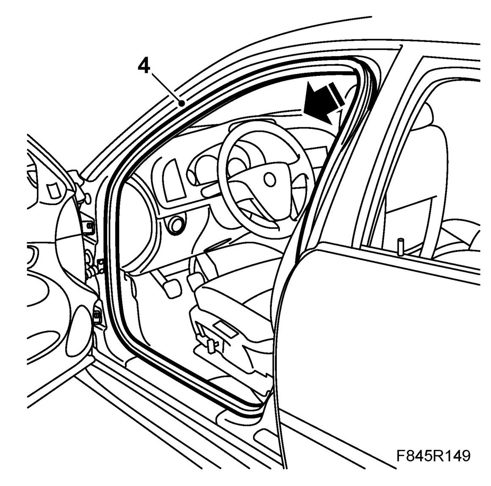
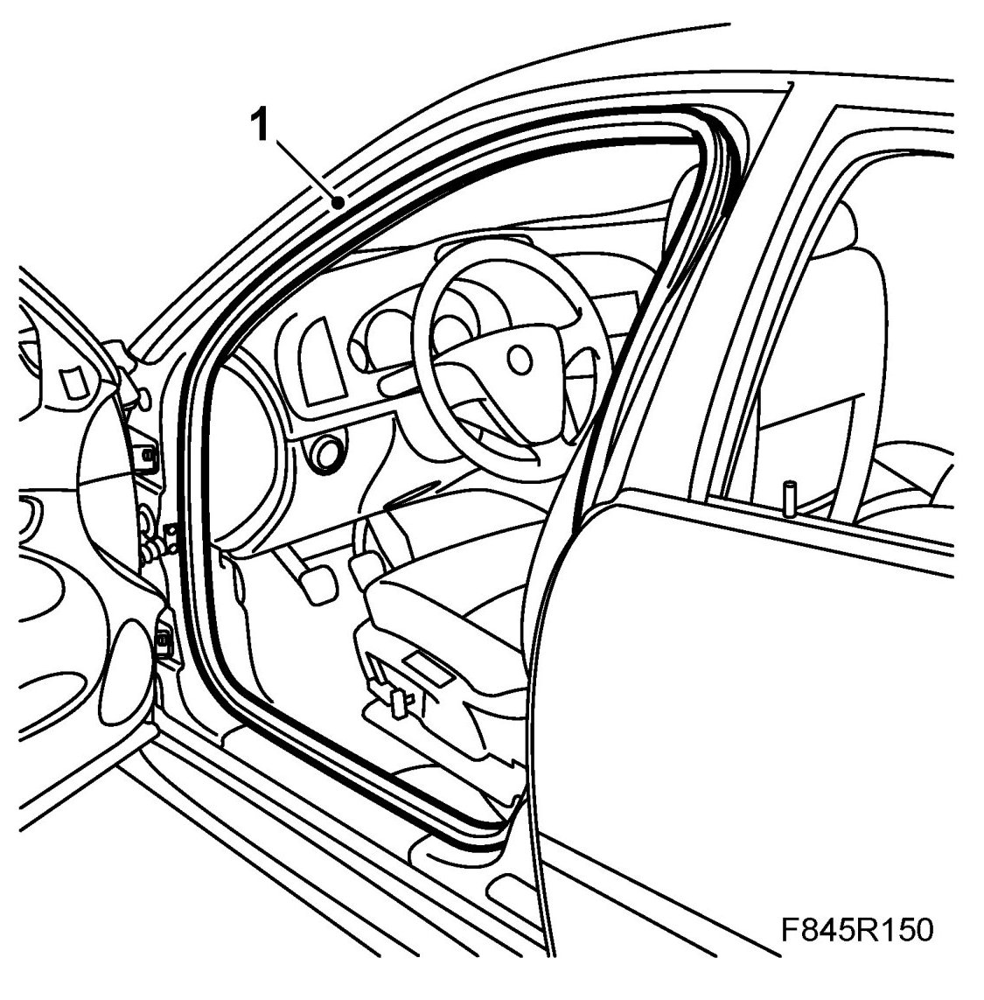

Weatherstrip, Front Door
Weatherstrip, Front Door
To remove
1. Remove the A-pillar trim.
2. Remove the B-pillar trim.
3. Remove the lower panel from the A-pillar
4. Remove the front door weatherstrip by carefully pulling it straight off the metal flange.

To fit
1. Fit the front door weatherstrip. Use a rubber hammer so that the weatherstrip is properly located.
NOTE: If replacing the weatherstrip, the installation strap must be removed once all components have been installed.

2. Fit the lower A-pillar panel.
3. Fit the B-pillar trim.
4. Fit the A-pillar trim.
5. When fitting a new weatherstrip, remove the installation strap to be able to position the inner tab of the weatherstrip.